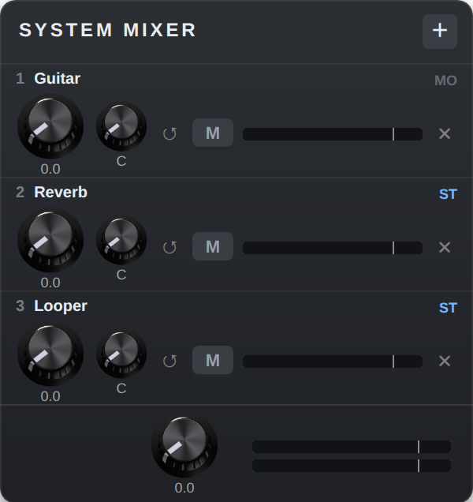

The System Mixer is the one mixer at the end of your pedalboard. Instead of dragging two cables from every plugin to the outputs, you right-click a plugin and choose Send to mixer. It gets its own channel with a level knob, a pan knob, a mute button and a level meter, and the mixer sends everything to the outputs.
The pedal only shows the channels you are using, so with three plugins sent it is three slim rows tall. It takes up to 16 plugins, mono or stereo, and costs very little processing power — less than a single stock MOD mixer.
Lists every plugin on the board that has audio outputs and is not in the mixer yet. Pick one to send it.
The plugin feeding this row, with ST (stereo: both outputs connected) or MO (mono) next to it.
How loud this plugin is in the mix. The number under the knob is in dB.
Where the plugin sits between the left and right speaker.
Puts GAIN back to 0 and PAN back to the centre for this row.
Silences the row; it lights red while muted. The meter keeps showing the plugin’s level, so you can see it is still playing.
How hot the plugin arrives, before GAIN. The white tick is 0 dB; red beyond it means the plugin itself is too loud.
Takes this plugin out of the mixer. Its cables to the mixer are unplugged and nothing else is connected, so it goes quiet.
The level of the whole mix, with the left and right output meters beside it. 0.0 leaves the mix as it is.
Right-click the body of any plugin with audio outputs and choose Send to mixer, or use + on the mixer. The plugin takes the first free channel. A stereo plugin uses both sides of it; a mono plugin plays in the middle and its PAN moves it left or right. If the plugin was cabled straight to the outputs, those cables are removed, so you never hear it twice. Cables to other plugins stay as they are.
On the starless firmware the new cables become teleports: a short stub with a label at the plugin and at the mixer, instead of a cable across the board. You can rename the label, or turn it back into a normal cable, like any teleport.
Right-click the plugin again and choose Remove from mixer, or press ✕ on its row. The plugin is unplugged from the mixer and its row disappears.
Download the build for your platform from the plugin’s GitHub Releases
page: sysmixer-vX.Y.Z-dwarf-aarch64.tar.gz for the MOD Dwarf and
sysmixer-vX.Y.Z-linux-amd64.tar.gz for MOD Desktop.
tar xzf sysmixer-vX.Y.Z-linux-amd64.tar.gzsysmixer.lv2 folder into
~/Documents/MOD Desktop/lv2/scp -O -r sysmixer.lv2 root@192.168.51.1:/root/.lv2/
ssh root@192.168.51.1 'systemctl restart jack2 mod-ui'
| Format | LV2 audio plugin, 16 stereo inputs → stereo out |
|---|---|
| Platforms | MOD Dwarf (aarch64), MOD Desktop (Linux x86_64) |
| Per channel | Gain −60…+12 dB (bottom = off), pan, mute, meter |
| Master | Gain −60…+12 dB, left/right meters |
| Pan | Mono: constant power (−3 dB at centre). Stereo: balance. |
| Processing cost | About 31 µs per 128-sample block on a MOD Dwarf (about 1.2 % of the audio period), whether 1 or 16 channels are in use |
| Latency | None |
The System Mixer is free software built with the DISTRHO Plugin Framework. Manual edition November 2026 — for the plugin version it shipped with; see the GitHub release page for the latest.